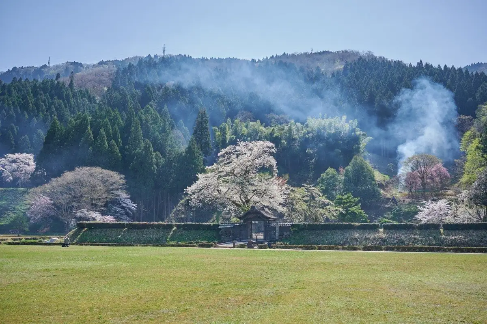
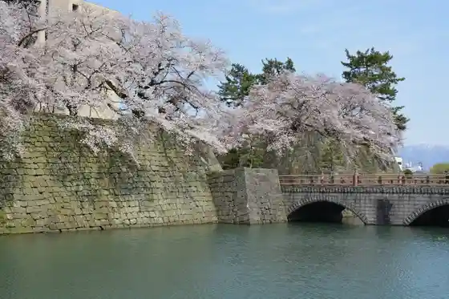
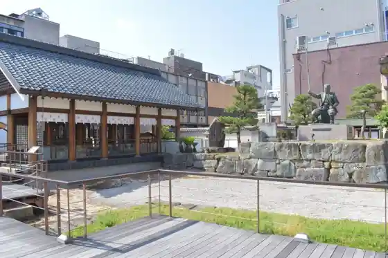
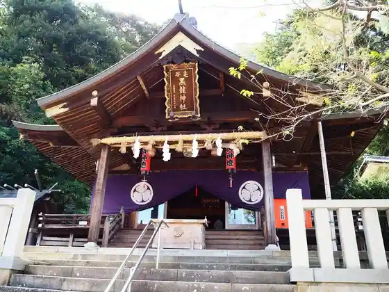

Fukui
Fukui · Fukui
Fukui
Highlighted on the Fukui map.

Sights
Miya no Shita Kosumosu Ko En
Fukui Joshi

Ichijo Tani Asakura Shi Iseki
Shibata Shrine (Kitanosho Joshi)

Ke Taniguro Ryu Shrine

Hoko Shima
Saiko Tera (Shibata Katsuie O City no Ho Hakasho)
Meisho Yoko Kan Garden
Fukui Eki Nishiguchi Plaza (Kyoryu Plaza)
Kunimi Kurage Kominkan
Kodai Seibutsu Museum (Genso Kurage Kan Atolla)
Ichijo Tani Asakura Shi Iseki Fukuhara Town Nami
Fukui Sen Ichiba (Fukui Chuo Oroshiuri Market)
Asuwa Yama Park
Suibun Shrine
Shin Kankaku XR Basu WOW RIDE Ikossa ! Fukui Go
Tan Gan Hora
Ichijo Taki
Taian Zendera
Sa Kae no Sha
Ayukawa Enchi Campground
Fenikkusu Plaza (Fukui Minpuku Shi Hall)
Echizen Nagisa Oto Campground
Komyunitei Resort Riraimu
Fukui Prefectural Ichijo Tani Asakura Shi Iseki Museum
Roadside Station Ichijo Tani Asakura Mizu no Eki
Kome Go Miso Raku
Shino Seien Tokoro / Shi no Ya
Asuwa Kawa Sakura Namiki
Fukui Yatai Village
Fukui Ritsu Kyodo History Museum
Sukatto Land Kuzuryu (Kyukan)
Fukui Kanko Koryu Center
Mori no Hokago VILLAGE
Fukui Ken Sen Kyo Biru
Rentasaikuru (Fuku Chari) (Fukui Nai 19 Ke Tokoro)
Yukemuri Onsen Yu Yu
Fukui Machinaka Information Center (Uerukamu Center)
Fukui Tourist Information
Kappo Ryokan Echizen Mangetsu
Fukui Kenko Forest Ikigai Koryu Center (Kenko no Mori Onsen)
Garagara Yama Campground
Benkei no Sentaku Iwa
Fukui Prefectural History Museum
Tamba Choju Hakasho (So Mitsudera)
Dog Park OCEAN'S (Doggu Park Oshanzu)
Koshino Beach
Takanosu Beach
Fukui Nigiwai Koryu Shisetsu (Hapirin)
Echizen Hama Nasu
Serenpuranetto
Zui Gen Tera
Fukui Prefectural Art Museum
Fukui Nature Shi Museum
Monju Yama
Apa Hotel Fukui Hen Town
Nishi Chosho Tera (Fujishima Castle Ruins)
Ichijo Taki Kojiro no Sato Famirii Park
Shiro Town Anekkusu
Sano Onsen Fuku Baths
Fukui Hosu Park
Taian Tera Onsen Bansho Kaku
Minshuku Yoneya
Tomyo Tera Nawate Nitta Yoshisada Sembotsu Densetsu Chi (Nittazuka)
Fukui Kennai Suimen Sogo Center
Za Guran Yuazufukui
Echizen Suisen no Sato Park
Fukui Prefectural Ongakudo (Hamoniihoru Fukui)
Ayukawa Beach
Koro Sono
Kame Shima (Benten Shima)
Fukui Ken Seikatsu Gakushu Kan (Yu Ai Fukui)
Fukui Prefectural Library
Fukui Shrine
Anyoji
CURU-F Fukui Eki
Kawa Jin Ryokan
Sho Daikokuya Shoten
Fukui Shiroyama Sato Kuchi Mikado
Fukui Ken'ei Gym
Gurifisu Memorial Museum
Odameidogaido (Fukui Kanko Omotenashi Gaido)
Fukui Shitei Bunkazai Osagoe Minka Sono
Fukui Prefectural Ichijo Tani Asakura Shi Iseki Museum
Go Taishi Falls
Echizen Soba Kurabu
Sanai Park Hashimoto Sanai Ritsuzo
Kami no Sokuseki
Shirakawa Sei Seitan Yuki Chi Kinenhi
Rentasaikuru − Fukui − Fukui Eki Nishiguchi Chushajo
Fukui Kirara Kan
Uchibori Park
Fukui Ki Gokoro Bunka Horu
Asuwa Yama Terasu
Tabako Ya Ryokan Ato (Tabakoyaryokan'ato)
Fukui Ken Furusato Literature Museum
Inari Shrine (Fukui Nishinaka no Town)
Sho On Tera
Fukui Ken Gokoku Shrine
Fukui Kenko Forest Kenko Supotsu Center
Fukui Art Museum (Atorabo Fukui)
Fukui Atago Saka Sado Art Museum
Zen Yoshi Tera
Oguro Maru Castle Ruins
Yasushi Kei Kensho Hi
Hashimoto Sanai Taku Ato
Fukui Prefectural Kodomo Rekishi Bunka Kan
Yuri Kosei Taku Ato
Fukui Kenko Forest Kenmin Kenko Center
Tachibana Akemi Kinen Literature Museum
Iwasa Matabe no Haka
Kusakabe Taro, Gurifisu Zo
Yuri Kosei Plaza
Geba Chuo Park
Daikoku Maru Castle Ruins (Miyake Kuromaru Castle Ruins)
Yokoi Shonan Kiryu Chi Ato
Gio Gijo no Residence Ato
Fukui Yakusho